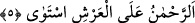
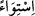

“O” yani Kur’ân “yeri ve yüce gökleri yaratan” yokluktan varlığa çıkaran
“tarafından peyderpey indirilmiştir.” Yerin ve göklerin yaratılmasının özel olarak
zikredilmesi, onların âlemin temeli ve aslı olmalarındandır. Yerin önce getirilmesi,
duyu organlarına daha yakın ve kul açısından daha bâriz olmasındandır. Göklerin
“yüce” diye vasfedilmesi onu yaratanın azametini göstermek içindir.
5. O Rahmân, Arşı istivâ etmiştir.
“O Rahmân,” meleklerin taşıdığı “Arşı istivâ etmiştir.” Rahman medh için merfû
olarak getirilmiştir; ‘O Rahman’dır’ mânâsına gelir.
Bil ki Arş, Melik’in tahtı demektir. “
” ise karar kılıp oturmak ve istîlâ (kaplamak
ve yerleşmek) mânâsına gelir. Arşı istivâ etmek mülk sâhibi olmaktan kinâyedir. Çünkü
mülk Melik’e tâbidir. Burada gerekli olan (lâzım) zikredilip onun îcâbı olan (melzûm)
kasdedilmiştir. “Filanca, padişah tahtına oturdu.” cümlesi, o kimse bilinen tahtın üzerine
oturmamış olsa bile onun padişah olduğu mânâsına gelir. Şu halde bu âyette kasdedilen
Hak Teâlâ’nın şerefli irâdesinin kâinâtı yaratmaya ve onu idâre etmeye irâdesinin
taalluk etmesidir. Çünkü Bârî Teâlâ intikal ve hulûlden berîdir. İbâdet edenlerin
yeryüzünde bedenleriyle nereye yöneleceklerini bilmeleri için Kâbe yaratıldığı gibi,
semâda kalbleriyle nereye yöneleceklerini bilmeleri için de Yüce arş yaratılmıştır.
Şeyh-i Ekber (k.s.) Fütûhât’ta şöyle der: “Hak Teâlâ’nın arş üzerine istivâ ettiği
Kur’an’da beyan edilmiştir. Bundan maksad ona îmân etmektir. Biz bunu te’vil etmek
istemeyiz ki bu konuda te’vil azgınlıktır. Âyetin zâhirini kabul eder ve bâtınına teslim
oluruz ki bu sünnîlerin îtikadıdır. Ama biliyoruz ki Cenâb-ı Hak mekâna muhtaç
değildir, arş da onu tutucu değildir. Mekânı da arşı da tutan/muhâfaza eden O’dur.”
O’nun tarafına ne mekân yol buldu, ne de zaman
O’ndan ne beyan haber verir, ne de ıyân
Bunların hepsi Yüce Pâdişâh’ın mahlûkudur
Âlem-i yaratan, âlemden yücedir
Âriflerden biri: “Kâinâtta Allah’tan bir eser, Allah’ta da kâinâttan bir eser yoktur.”
der. Yine bir zât şöyle der: “Biz kesin olarak Allâh’ın mekândan münezzeh olduğunu
biliriz. Aksi halde mekânın kadim olması gerekir. Deliller ise Allah’tan başka kadîm
olmadığını gösterir. Allah, âyette geçen ‘istivâ’ ile yerleşmeyi ve oturmayı değil, belki
başka bir şeyi murâd etmiştir. Ancak biz bunda hata yapmaktan korkarak bunu
belirlemekle meşgul olmayız. Müteşâbih âyetlerin te’vîlini Allâh’a havâle ederiz.
Nitekim müteşâbih âyetlerle ilgili “Onun te’vîlini Allah’tan başkası bilmez.” âyetinde
(Âl-i İmran, 3/7) “illallah”da vakfedenlerin görüşü de böyledir. Selefin de çoğu bu yolu